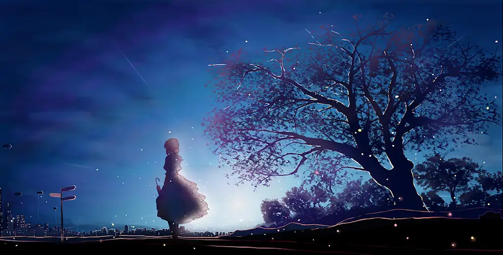

Anime

Anime is a popular style of Japanese animation, known for distinct art, diverse genres, and emotional storytelling, spanning from action-packed hits to deep psychological dramas.
Key Characteristics
- Visual Style: Often features characters with large, emotive eyes, defined lines, and bright colors.
- Techniques: Focuses heavily on detailed settings and "camera effects" like panning and zooming rather than just fluid movement.
- Origins: Most anime are adaptations of Japanese comics called manga, light novels, or video games.
Source for this site
Popular Quotes
- Nagisa Furukawa (Clannad)
- "If you want happy things, just go look for them."
- Kakashi Hatake (Naruto)
- "In the ninja world, those who break the rules are scum, that's true... but those who abandon their friends are worse than scum."
- Edward Elric (Fullmetal Alchemist: Brotherhood)
- "Gain requires sacrifice."
- Jiraiya (Naruto)
- "Home is a place where someone thinks of you."
- Hodaka Morishima (Weathering with You)
- "I want you more than any blue sky."
- Kaori Miyazono (Your Lie in April)
- "We're all just faking it, some of us better than others."